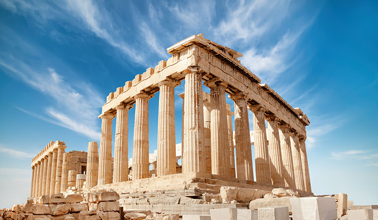

🏛️ อารยธรรมกรีก

อารยธรรมกรีกโบราณเกิดขึ้นบริเวณคาบสมุทรบอลข่านและหมู่เกาะในทะเลอีเจียน ภูมิประเทศส่วนใหญ่เป็นภูเขาและมีเกาะจำนวนมาก ทำให้ชาวกรีกมีการตั้งนครรัฐหรือโปลิสขึ้นหลายแห่ง โดยนครรัฐที่มีชื่อเสียง ได้แก่ เอเธนส์และสปาร์ตา
เอเธนส์มีพัฒนาการด้านประชาธิปไตย โดยเปิดโอกาสให้พลเมืองชายมีส่วนร่วมทางการเมือง ส่วนสปาร์ตามีชื่อเสียงด้านการทหารและการฝึกฝนพลเมืองให้มีความเข้มแข็ง
ชาวกรีกมีผลงานสำคัญด้านปรัชญา วิทยาศาสตร์ ศิลปะ วรรณกรรม และการเมือง นักปรัชญาที่มีชื่อเสียง ได้แก่ โสเครตีส เพลโต และอริสโตเติล แนวคิดของชาวกรีกมีอิทธิพลต่อโลกตะวันตกและยังคงมีความสำคัญมาจนถึงปัจจุบัน